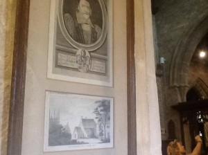

Big congratulations to walk leaders Richard White and Ali Pretty and all the participating walkers and online participants over 2 days during the weekend of Saturday 21st and Sunday 22nd June- #NewtonWalk has been a roaring success! It’s all about the stories, captured in pictures and shared with new audiences. We reached over 28,000 users per 50 tweets and more than 1000 Facebook accounts over the two days. Our furthest distant geographical follower was a lady in Queensland Australia!!
 Cherie Lee @leecd60
Cherie Lee @leecd60@Gravityfields Bundaberg, Australia #newtonwalk
What’s great is that through the wonders of technology the route and all of the moments of discovery have been captured for all to see. Here’s the Day 1 route where you can click on the points of interest and even see the tweets and photos taken at key points http://my.viewranger.com/track/details/OTQ4MjQ3
Day 1 highlights include the wall outside Newtons school in Grantham where during a fight he allegedly rubbed his opponents face in.
Next up there was the rectory at Boothby Pagnell where Newton formulated his Fluxions in 1666-67 (a few years before Leibniz called it Calculus and another slightly less physical fight ensued) 
Despite their own battles with stinging nettles and walkways, the team made it to Bassingthorpe church to see where Newton himself discovered his own family heritage traced back to churchward John Newton of Westby.
After an afternoon pub stop just time for a trip to Burton-le-Coggles where the vicar Isaac’s Uncle William Ayscough was taking a well deserved nap after keeping the village safe throughout the Civil War.
Day 2 updates to come with news of Newton’s burning ambitions at the Rectory in a home visit to Woolsthorpe Manor , his schooling in Skillington and his garden momument over at the stunning Stoke Rochford. Stay tuned!!